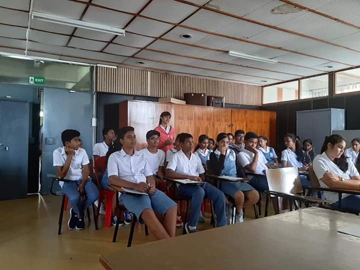

The MGI MUN also known as the Mini- MUN, was first initiated by Ms Priyanka Ramyead, an ex MGI student. It is a 1 day conference held by and for MGI students as a way to inculcate Munner-values in Gandhians since a very young age. The conference goes as per a Commonwealth Youth Conference-Conference of Commonwealth Education Ministers (CYC-CCEM) format as it is believed to be more 'fair', ensuring that the conference is held in a meritocratic way. This is undoubtedly one of the most awaited extra curricular activity of the MGISS. Long live Gandhians! Long live MGI MUN !